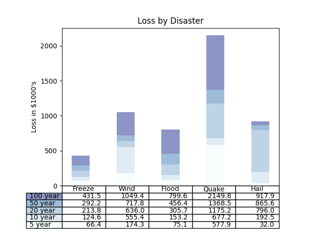

Note
Click here to download the full example code
08. plt.bar with plt.table
Plot bars and add a table to an Axes.
 9 import numpy as np
10 import matplotlib.pyplot as plt
11
12
13 data = [[ 66386, 174296, 75131, 577908, 32015],
14 [ 58230, 381139, 78045, 99308, 160454],
15 [ 89135, 80552, 152558, 497981, 603535],
16 [ 78415, 81858, 150656, 193263, 69638],
17 [139361, 331509, 343164, 781380, 52269]]
18
19 columns = ('Freeze', 'Wind', 'Flood', 'Quake', 'Hail')
20 rows = ['%d year' % x for x in (100, 50, 20, 10, 5)]
21
22 values = np.arange(0, 2500, 500)
23 value_increment = 1000
24
25 # Get some pastel shades for the colors
26 colors = plt.cm.BuPu(np.linspace(0, 0.5, len(rows)))
27 n_rows = len(data)
28
29 index = np.arange(len(columns)) + 0.3
30 bar_width = 0.4
31
32 # Initialize the vertical-offset for the stacked bar chart.
33 y_offset = np.zeros(len(columns))
34
35 # Plot bars and create text labels for the table
36 cell_text = []
37 for row in range(n_rows):
38 plt.bar(index, data[row], bar_width, bottom=y_offset, color=colors[row])
39 y_offset = y_offset + data[row]
40 cell_text.append(['%1.1f' % (x / 1000.0) for x in y_offset])
41 # Reverse colors and text labels to display the last value at the top.
42 colors = colors[::-1]
43 cell_text.reverse()
44
45 # Add a table at the bottom of the axes
46 the_table = plt.table(cellText=cell_text,
47 rowLabels=rows,
48 rowColours=colors,
49 colLabels=columns,
50 loc='bottom')
51
52 # Adjust layout to make room for the table:
53 plt.subplots_adjust(left=0.2, bottom=0.2)
54
55 plt.ylabel(f"Loss in ${value_increment}'s")
56 plt.yticks(values * value_increment, ['%d' % val for val in values])
57 plt.xticks([])
58 plt.title('Loss by Disaster')
59
60 plt.show()
Total running time of the script: ( 0 minutes 0.132 seconds)